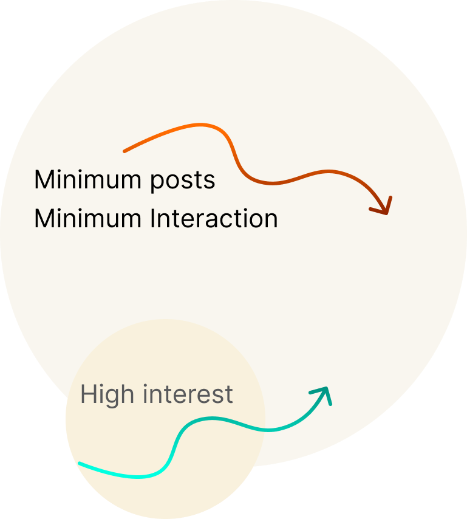
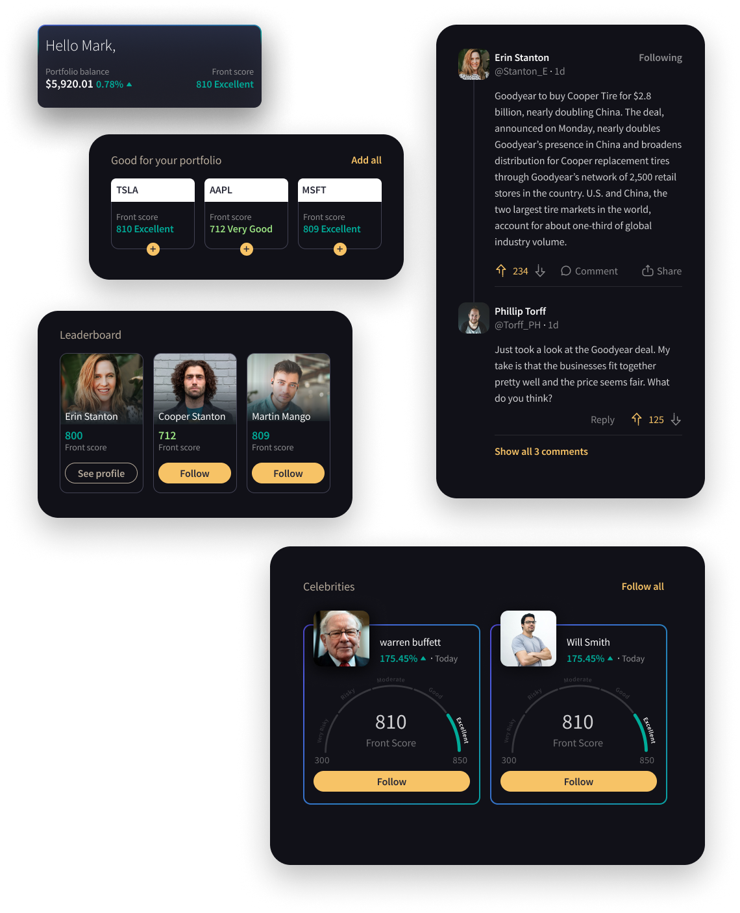

Research summary
The posts were clicked by less than 5 percent of users, and almost no one posted.
Based on our data analysis and user testing, we found that the home feed content doesn't have the expected interaction. In spite of this, the users on our user testing found both, the concept and content attractive and useful, however, observing their actual behavior and the data, we found that there is very little engagement with the home feed.
Minimum posts
Minimum interaction

The homefeed includes portfolio over view, social media generated posts,
a highlight of the top performing portfolios, a highlight of the Celebrities
profile, and Stock recommendations.
